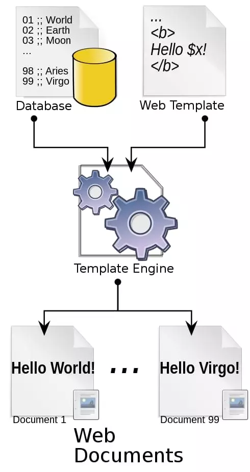

2.1 Pub
Introduction
Why pub?
As web designers or developers, we likely all have to write our fair share of HTML. And while this is not the most difficult task, it can often feel a little boring or repetitive. This is where the Pug HTML preprocessor comes in.
HTML is also static, which means that if you want to display dynamic data (fetched from an API, for example), you invariably end up with a mishmash of HTML stings inside JavaScript. This can be a nightmare to debug and to maintain. Pug is a template engine for Node and for the browser. It compiles to HTML and has a simplified syntax, which can make you more productive and your code more readable. Pug makes it easy both to write reusable HTML, as well as to render data pulled from a database or API.
History
It’s also worth noting that Pug used to be called Jade until it was forced to change its name due to a trademark claim in 2015. The name change took effect with version 2.0.
What is pug used for
A template engine is a program which is responsible for compiling a template (that can be written using any one of a number of languages) into HTML. The template engine will normally receive data from an external source, which it will inject into the template it’s compiling. This is illustrated by the following diagram.

Example
doctype html
html(lang='en')
head
title Hello, World!
body
h1 Hello, World!
div.remark
p Pug rocks!
Rendered output
<!DOCTYPE html>
<html lang="en">
<head>
<title>Hello, World!</title>
</head>
<body>
<h1>Hello, World!</h1>
<div class="remark">
<p>Pug rocks!!</p>
</div>
</body>
</html>
DOCTYPE
You can use Pug to generate a number of document type declarations.
For example doctype html will compile to <!DOCTYPE html>, the standard HTML5 doctype, whereas doctype strict will give us <!DOCTYPE html PUBLIC "-//W3C//DTD XHTML 1.0 Strict//EN" "https://www.w3.org/TR/xhtml1/DTD/xhtml1-strict.dtd">. Pug will do its best to ensure that its output is valid for the document type.
Tags
As mentioned, Pug doesn’t have any closing tags and relies on indentation for nesting. This might take a small amount of getting used to, but once you do, it makes for clean and readable code. By way of an example:
nav
navbar-default div
h1 My Website!
ul
li
a Home
li
a Page 1
li
a Page 2
input
Rendered output
<nav>
<div>
<h1>My Website!</h1>
</div>
<ul>
<li><a>Home</a></li>
<li><a>Page 1</a></li>
<li><a>Page 2</a></li>
</ul>
<input/>
</nav>
TIP
Notice that Pug is smart enough to close any self-closing tags (such as the
<input />element) for us.
Classes, IDs and Attributes
Classes and IDs are expressed using a .className and #IDname notation. For example:
nav#navbar-default
div.container-fluid
h1.navbar-header My Website!
Pug also offers us a handy shortcut. If no tag is specified, it will assume a <div> element:
nav#navbar-default
.container-fluid
h1.navbar-header My Website!
Both of these compile to:
<nav id="navbar-default">
<div class="container-fluid">
<h1 class="navbar-header">My Website!</h1>
</div>
</nav>
Attributes are added using brackets:
ul
li
a(href='/') Home
li
a(href='/page-1') Page 1
li
a(href='/page-2') Page 2
input.search(
type='text'
name='search'
placeholder='Enter a search term...'
)
This results in the following:
<ul>
<li><a href="/">Home</a></li>
<li><a href="/page-1">Page 1</a></li>
<li><a href="/page-2">Page 2</a></li>
</ul>
<input class="search" type="text" name="search" placeholder="Enter a search term..."/>